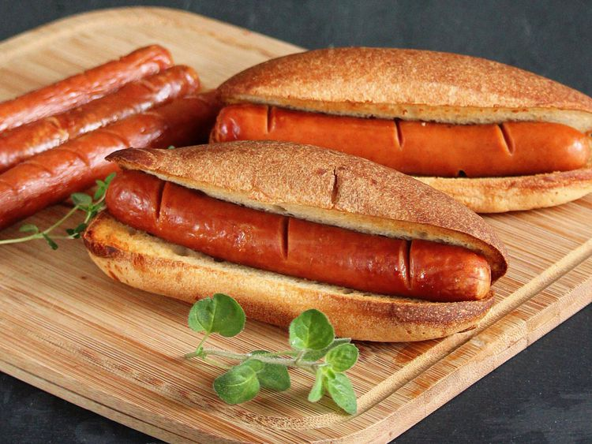

Classic and simple hot dog

Description:
You can do it in less than 10 minutes
Hot Dogs Ingredients
How To Cook
- Step 1. Place buns in a single layer in the air fryer basket; cook in the preheated air fryer until crisp, about 2 minutes. Remove buns to a plate.
- Step 2. Place hot dogs in a single layer in the air fryer basket; cook for 3 minutes. Serve hot dogs in toasted buns.